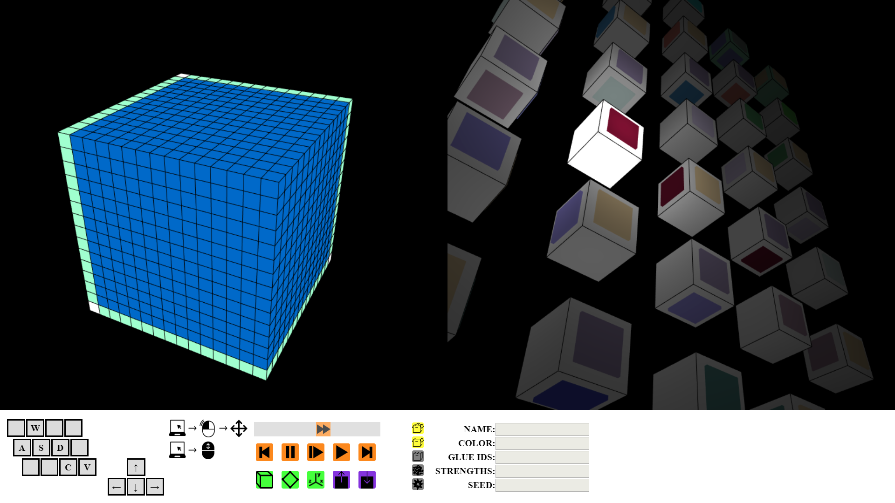
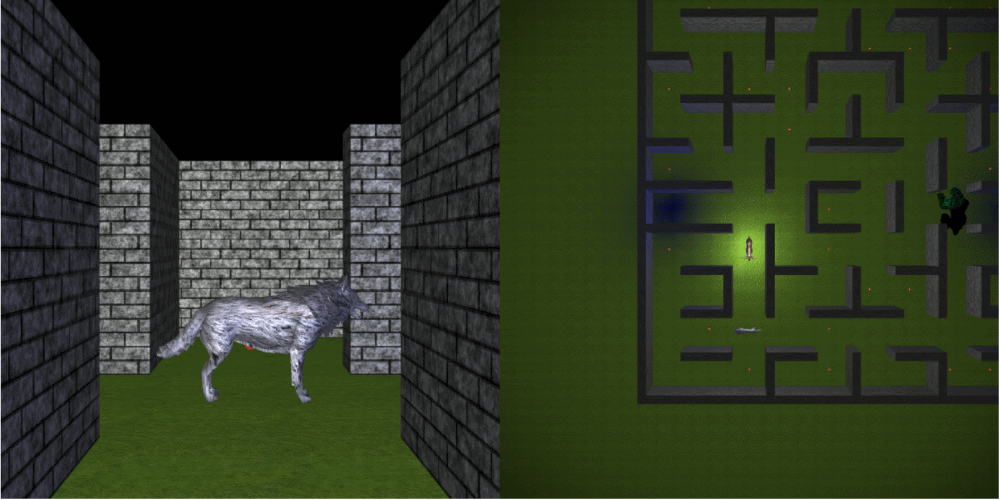

My name is Christian Wendlandt and I'm a graduate of UW-Oshkosh with a Bachelor of Science. Because I couldn't decide what I loved more, I double majored in Computer Science and Mathematics. I enjoy sharing my passions and tutored for both majors throughout my schooling. My favorite projects usually include graphics, computer architecture, or assembly language. Contact me if you are looking for an astute, deep-learning, and dedicated, problem-solver.


This is a 3D simulator that is programmed in JavaScript with the WebGL API. It should be able to run on any modern browser and computer with sufficient graphical processing power.
The abstract Tile Assembly Model (aTAM) is a model used by researchers and mathematicians in the field of self-assembly. The model takes a tile set as input and then constructs an assembly tile by tile. Beautiful and intricate structures can be rendered from simple tile sets.
 Visualizing constructions can be extremely tedious on a chalkboard and research papers are seldom accompanied by more than a few still images to explain how their constructions work. Being able to hyperlink directly to a simulator and input tile set would make for a strong academic tool. Demos are preloaded into the simulation, so even if you don't have your own tile set to input, you can still see how it works.
View Live View Code This was the final project for my computer Graphics Course. The goal of the project was to demonstrate techniques in lighting, texture mapping, and model manipulation. More specifically, it uses the Lambertian and Gouraud shading models with small additions for distance lighting. Along with standard rectangular 2D texture mapping, the game also uses cylindrical and spherical mapping for certain models.
The objective of this pacman-esque game is to collect as many apples as possible without getting caught. Although not told to the player, you can change the second screen's camera angle to get a better look at some of the models or to increase the challenge. These angles are selected with keys 1 through 6.
View Live View CodeLeading up to my final year at UWO, I was approached and offered an assistant researcher role by a professor of the computer science department. This was a summertime position which fulfilled the internship requirements of my CS degree. Two of the department's professors are dedicated to the field of self-assembly, which is a mathematics-heavy subfield of computer science. I was considered a good fit for the position because of my math major and quick mastery of recent high-level courses.
The goal of the research practicum was to prove or disprove the existence of a smaller upper bound on the complexity of a certain self-assembly construction. There were several phases to the research practicum:
The project was fully completed on time and the findings published in Summer of 2019.
Research ProposalIf you want to see the algorithm in practice, you can do so with my aTAM Simulator.